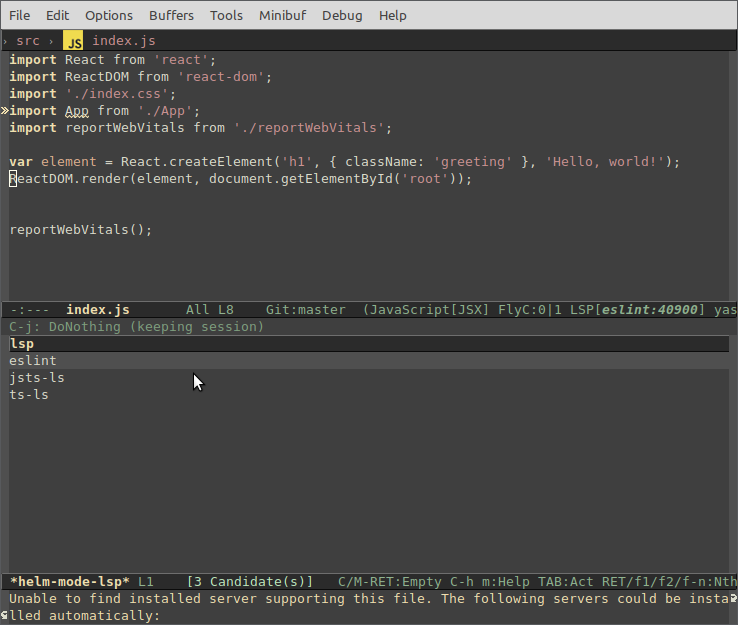
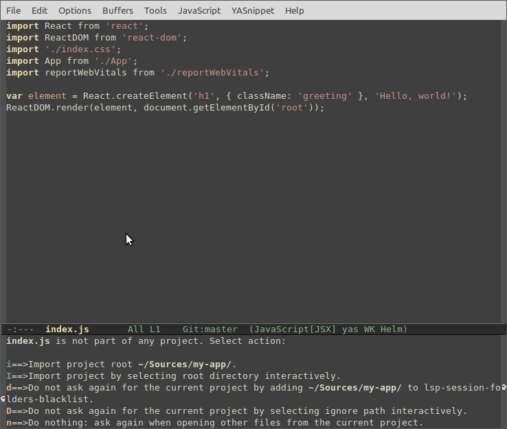
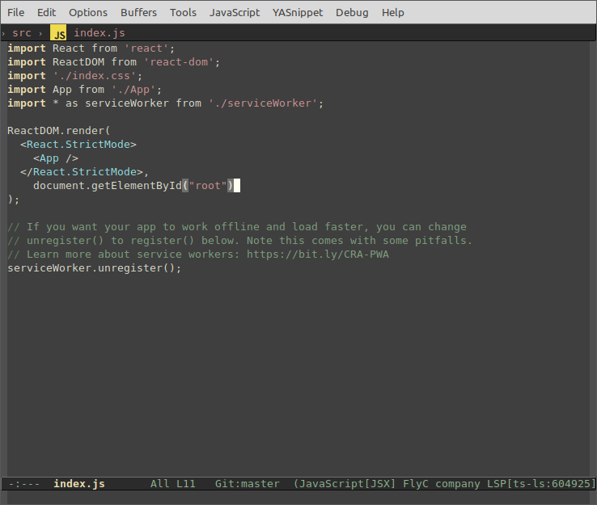
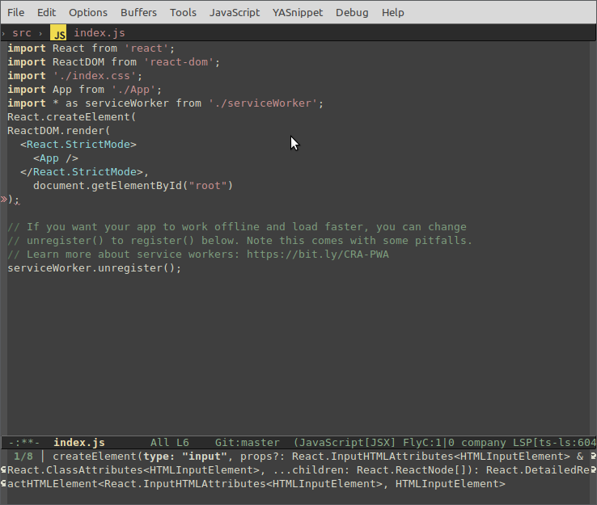
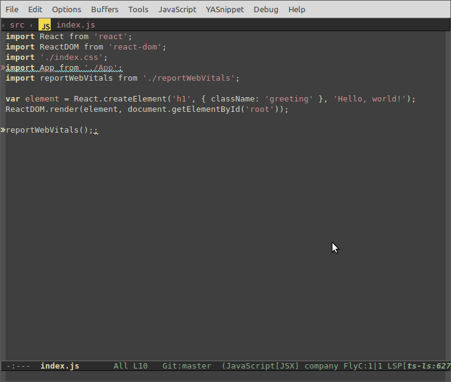

Using React in Emacs#
React is a popular JavaScript library developed by Facebook for building web application user interfaces. The Emacs editor supports React.js IntelliSense and code navigation out of the box.

Welcome to React#
We'll be using the create-react-app generator for this tutorial. To use the generator as well as to run the React application server, you'll need the Node.js JavaScript runtime and npm (Node.js package manager) installed. npm is included with Node.js, which you can download and install from Node.js downloads.
Tip: To test that you have Node.js and npm correctly installed on your machine, you can type
node --versionandnpm --versionin a terminal or command prompt.
You can now create a new React application by typing:
npx create-react-app my-app
where my-app is the name of the folder for your React application. It may take a few minutes to create it and to install its dependencies.
Note: If you've previously installed
create-react-appglobally vianpm install -g create-react-app, we recommend you uninstall the package usingnpm uninstall -g create-react-appto ensure that npx always uses the latest version.
Let's quickly run our React application by navigating to the new folder and typing npm start to start the web server and to open the application in a browser:
cd my-app
npm start
You should see the React logo and a link to "Learn React" on http://localhost:3000 in your browser. We'll leave the web server running while we look at the application with Emacs.
Emacs configuration#
Here is a minimal configuration to run this tutorial:
(package-initialize)
(add-to-list 'package-archives '("melpa" . "http://melpa.org/packages/") t)
(setq package-selected-packages '(lsp-mode yasnippet lsp-treemacs helm-lsp projectile hydra flycheck company avy which-key helm-xref dap-mode zenburn-theme json-mode))
(when (cl-find-if-not #'package-installed-p package-selected-packages)
(package-refresh-contents)
(mapc #'package-install package-selected-packages))
(load-theme 'zenburn t)
(helm-mode)
(require 'helm-xref)
(define-key global-map [remap find-file] #'helm-find-files)
(define-key global-map [remap execute-extended-command] #'helm-M-x)
(define-key global-map [remap switch-to-buffer] #'helm-mini)
(which-key-mode)
(add-hook 'prog-mode-hook #'lsp)
(setq gc-cons-threshold (* 100 1024 1024)
read-process-output-max (* 1024 1024)
company-idle-delay 0.0
company-minimum-prefix-length 1
create-lockfiles nil) ;; lock files will kill `npm start'
(with-eval-after-load 'lsp-mode
(require 'dap-chrome)
(add-hook 'lsp-mode-hook #'lsp-enable-which-key-integration)
(yas-global-mode))
M-. xref-find-definition in js buffers, add the following to your config:
(with-eval-after-load 'js
(define-key js-mode-map (kbd "M-.") nil))
To open your React application in Emacs, open another terminal or command prompt window, navigate to the my-app folder and type:
emacs my-app/src/index.js
Tip: For optimal experience use either
Emacs 27.1or gccemacs.
Installing the typescript language server#
Emacs supports automatic language server installation, so the first time you run M-x lsp in a JavaScript file opened in it, you will be prompted for a language server to install. Select ts-ls.

Importing the project#
Then you have to select project root. Press i.

Syntax highlighting and bracket matching#
You'll notice that Emacs has syntax highlighting for the various source code elements and, if you put the cursor on a parenthesis, the matching bracket is also selected.

IntelliSense#
As you start typing in index.js, you'll see smart suggestions or completions.

After you select a suggestion and type ., you see the types and methods on the object through IntelliSense.

Emacs uses the TypeScript language service for its JavaScript code intelligence and it has a feature called Automatic Type Acquisition (ATA). ATA pulls down the npm Type Declaration files (*.d.ts) for the npm modules referenced in the package.json.
If you select a method, you'll also get parameter help:

Go to Definition, Peek definition#
Through the TypeScript language service, Emacs can also provide type definition information in the editor through Go to Definition (M-.) or Peek Definition (M-x lsp-ui-peek-find-definitions). Put the cursor over the App, right click and select Go to definition.
Note: Peek definition requires installing lsp-ui package which is not part of the default installation.
Hello World!#
Let's update the sample application to "Hello World!". Add the link to declare a new H1 header and replace the <App /> tag in ReactDOM.render with element.
import React from 'react';
import ReactDOM from 'react-dom';
import './index.css';
import App from './App';
import reportWebVitals from './reportWebVitals';
var element = React.createElement('h1', { className: 'greeting' }, 'Hello, world!');
ReactDOM.render(element, document.getElementById('root'));
reportWebVitals();
Once you save the index.js file, the running instance of the server will update the web page and you'll see "Hello World!".

Debugging React#
To debug the client side React code, we'll need to install the Debugger for Chrome extension.
Note: This tutorial assumes you have the Chrome browser installed. There are also debugger extensions for the
EdgeandFirefoxbrowsers.
Press M-x and type dap-chrome-setup.
Set a breakpoint#
To set a breakpoint in index.js, click on the gutter to the left of the line numbers. This will set a breakpoint which will be visible as a red circle.

Configure the Chrome debugger#
We need to initially configure the debugger. To do so, create a launch.json file in the .vscode/ subfolder of the project root with a configuration to launch the website:
{
"version": "0.2.0",
"configurations": [
{
"type": "chrome",
"request": "launch",
"name": "Launch Chrome against localhost",
"url": "http://localhost:3000",
"webRoot": "${workspaceFolder}"
}
]
}
Ensure that your development server is running (npm start). Then type M-x dap-debug or use Debug -> Start menu. The source code where the breakpoint is set runs on startup before the debugger was attached, so we won't hit the breakpoint until we refresh the web page. Refresh the page and you should hit your breakpoint.

You can step through your source code using M-x dap-next, inspect variables such as element, and see the call stack of the client side React application.

The Debugger for Chrome extension README has lots of information on other configurations, working with sourcemaps, and troubleshooting. You can review it their README
Live editing and debugging#
If you are using webpack together with your React app, you can have a more efficient workflow by taking advantage of webpack's HMR mechanism which enables you to have live editing and debugging directly from Emacs. You can learn more in this Live edit and debug your React apps directly from Emacs(TO BE PORTED TO EMACS) blog post and the webpack Hot Module Replacement documentation(TO BE PORTED TO EMACS).
Linting#
Linters analyze your source code and can warn about potential problems before running your application. The JavaScript language service included with Emacs has syntax error checking support by default, which you can see in action in the Errors List panel (M-x lsp-treemacs-errors-list).
Try making a small error in your React source code and you'll see a red squiggle and an error in the Errors List panel.

Linters can provide more sophisticated analysis, enforcing coding conventions and detecting anti-patterns. A popular JavaScript linter is ESLint. ESLint, when combined with the ESLint Emacs extension, provides a great in-product linting experience.
First, install the ESLint command-line tool:
npm install -g eslint
Then install the ESLint language server by doing M-x lsp-install-server RET eslint RET.
Once the ESLint extension is installed, you'll want to create an ESLint configuration file, .eslintrc.js. You can create one using M-x lsp-eslint-create-default-configuration.
The command will prompt you to answer a series of questions in a separate window. Accept the defaults, and it will create a .eslintrc.js file in your project root that looks something like this:
module.exports = {
"env": {
"browser": true,
"es2020": true
},
"extends": [
"eslint:recommended",
"plugin:react/recommended"
],
"parserOptions": {
"ecmaFeatures": {
"jsx": true
},
"ecmaVersion": 11,
"sourceType": "module"
},
"plugins": [
"react"
],
"rules": {
}
};
ESLint will now analyze open files and shows a warning in index.js about 'App' being defined but never used.

You can modify the ESLint rules in the .eslintrc.js file.
Let's add an error rule for extra semi-colons:
"rules": {
"no-extra-semi":"error"
}
Now when you mistakenly have multiple semicolons on a line, you'll see an error (red squiggle) in the editor and error entry in the Problems panel.

Popular Starter Kits#
In this tutorial, we used the create-react-app generator to create a simple React application. There are lots of great samples and starter kits available to help build your first React application.
TypeScript React#
If you're curious about TypeScript and React, you can also create a TypeScript version of the create-react-app application. See the details at TypeScript-React-Starter on the TypeScript Quick Start site.